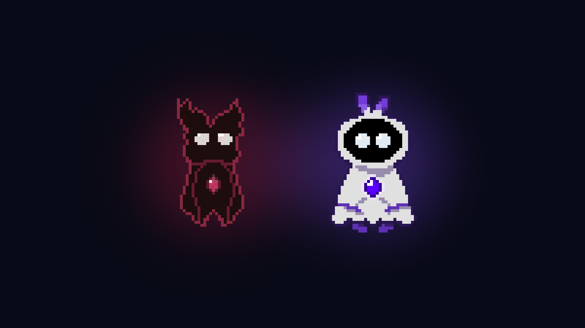
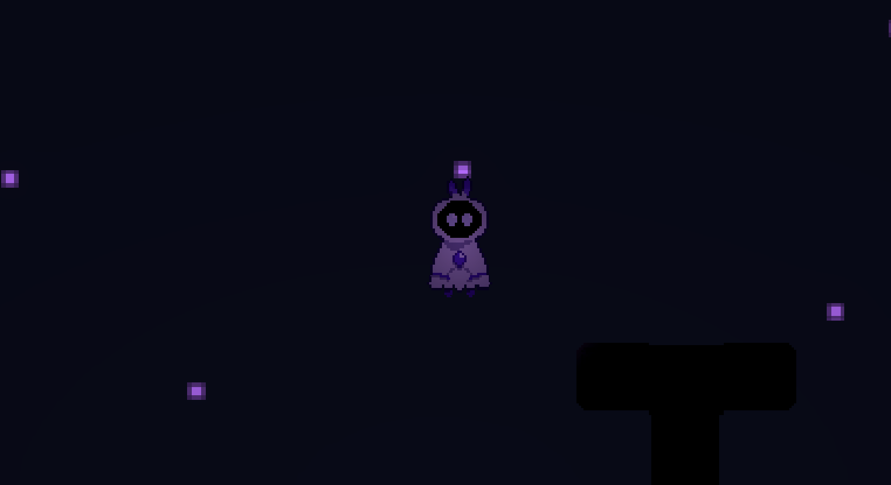
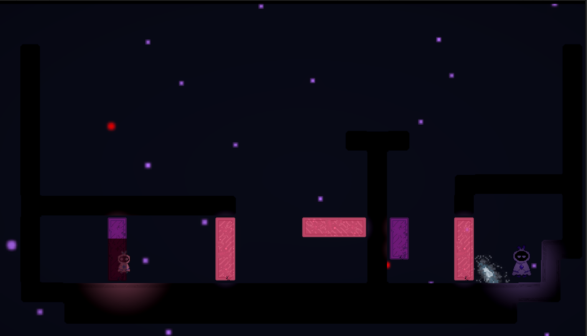
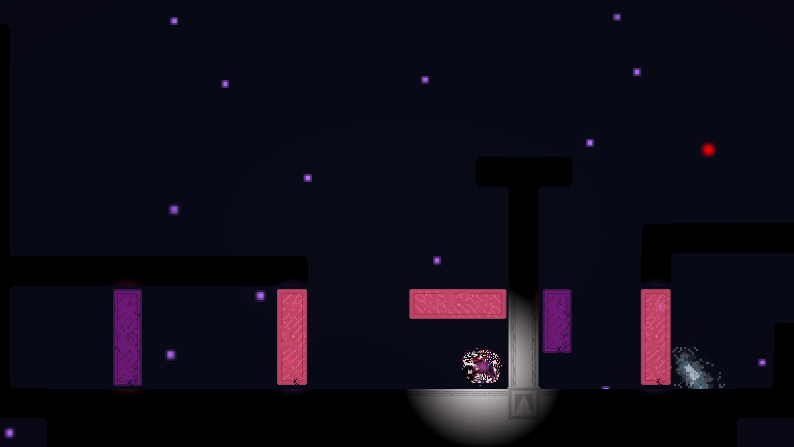

Nacidos de un mismo origen, Ipse y Alter son dos fragmentos que intentan volver a ser uno. Los movés a los dos con las mismas teclas, en un mundo donde hay paredes que existen para uno y no para el otro. Lo hicimos entre tres para la SANDA Game Jam 2026, con el tema Fragmentos.
Born from the same origin, Ipse and Alter are two fragments trying to become one again. You move both of them with the same keys, in a world where some walls exist for one and not for the other. We made it as a team of three for the SANDA Game Jam 2026, under the theme Fragments.
El tema de la jam era Fragmentos. En vez de dibujarlo, quisimos que se sintiera en las manos: un solo input mueve dos cuerpos a la vez, y el desafío no es esquivar nada, sino encontrar el terreno que los desincroniza.
The jam's theme was Fragments. Instead of drawing it, we wanted you to feel it in your hands: a single input moves two bodies at once, and the challenge isn't dodging anything, but finding the terrain that pulls them out of sync.
Ipse y Alter nacen de un mismo cristal roto. Cada nivel entra en una pantalla y termina cuando los dos se tocan: se acercan, se funden y el nivel se cierra con un destello. Los nombres salen de la distinción entre identidad ipse e idem que retoma Ricoeur, y la pregunta que nos acompañó todo el proyecto fue esa: partidos, ¿siguen siendo la misma cosa?
Ipse and Alter are born from the same broken crystal. Each level fits on a single screen and ends when the two of them touch: they drift together, merge, and the level closes with a flash of light. Their names come from the distinction between ipse and idem identity that Ricoeur picks up, and that was the question we kept coming back to: once split apart, are they still the same thing?
No hay pinchos, vidas ni pantalla de derrota. Equivocarse cuesta un reintento instantáneo, nunca progreso. La única pérdida del juego es parte de la historia, no un error del jugador.
No spikes, no lives, no game over screen. A mistake costs an instant retry, never progress. The only loss in the game is part of the story, not a player's mistake.
El juego no explica nada con palabras. Enseña con niveles, color y luz, y cuenta su historia sin un solo diálogo.
The game explains nothing with words. It teaches through levels, color and light, and tells its story without a single line of dialogue.
Cada herramienta aparece primero en un nivel seguro y después se exige. Una idea por pantalla.
Every tool shows up first in a safe level before it's ever demanded. One idea per screen.
"El tema de la jam era Fragmentos. En vez de dibujarlo, lo pusimos en las manos."
"The jam's theme was Fragments. Instead of drawing it, we put it in your hands."
Si los dos fragmentos hacen exactamente lo mismo todo el tiempo, no hay juego: apretás una tecla y pasan dos cosas iguales. Necesitábamos que el mundo los separara sin separar el control.
If both fragments do exactly the same thing all the time, there's no game: you press a key and the same thing happens twice. We needed the world to pull them apart without splitting the controls.
La respuesta fueron las paredes de color: bloques que son sólidos para uno y aire para el otro. Uno se apoya donde el otro cae, uno se traba mientras el otro sigue. Más adelante se suman la gravedad invertida en uno solo y el movimiento espejado. Para que se entienda de un vistazo, el mismo hecho se dice tres veces: con color, con forma y con un destello al chocar.
The answer was colored walls: blocks that are solid for one and thin air for the other. One lands where the other falls through; one gets stuck while the other keeps going. Later on, inverted gravity for just one of them and mirrored movement join in. To make it readable at a glance, the same fact is said three times: through color, through shape, and through a flash on impact.
Todo en Auralis se lo hacés a los dos al mismo tiempo, salvo una cosa: el switch, que los cambia de lugar. No sirve para escapar —los dos se siguen moviendo igual—, sirve para elegir cuál queda de qué lado.
Everything in Auralis happens to both of them at once, except for one thing: the switch, which swaps their places. It's not a way out —they still move the same— it's a way to choose which one ends up on which side.
El intercambio también pasa la velocidad, así que un fragmento que viene cayendo le presta esa caída al otro. Y no se puede usar mientras alguno atraviesa una pared: desde dónde lo usás pasa a ser parte del plan.
The swap carries their momentum too, so a fragment in free fall lends that fall to the other one. And it can't be used while either of them is passing through a wall: where you trigger it from becomes part of the plan.
Una jam no da tiempo para todo, así que buena parte del proceso fue decidir qué sacar. Estas son las cuatro decisiones que más cambiaron el juego.
A jam doesn't leave time for everything, so a big part of the process was deciding what to cut. These are the four decisions that changed the game the most.
Llegamos a prototipar un modo unido: los dos fragmentos fusionados en un solo cuerpo, con el mapa espejado. Funcionaba, pero partía el juego en dos ideas distintas y le quitaba fuerza a la principal, que era la de estar partido. También probamos plataformas que se rompen y bloques empujables.
We got as far as prototyping a merged mode: both fragments fused into a single body, on a mirrored map. It worked, but it split the game into two different ideas and weakened the main one, which was about being split apart. We also tried breakable platforms and pushable blocks.
Sacamos todo eso. Éramos un solo programador y dos artistas, y cada sistema nuevo le quitaba tiempo a lo que de verdad hacía falta: niveles.
We cut all of it. We were one programmer and two artists, and every new system took time away from what the game actually needed: levels.
Como el juego no tiene texto, los niveles tienen que hacer todo el trabajo. Armamos el recorrido de a tres: un nivel presenta una idea donde equivocarse no cuesta nada, el siguiente la exige y el tercero la combina con otra.
Since the game has no text, the levels have to do all the work. We built the path in threes: one level introduces an idea where mistakes cost nothing, the next one demands it, and the third combines it with something else.
Para quien se traba, sumamos una ayuda que no molesta a nadie más: si pasan unos segundos sin usar una acción, aparece el dibujo de la tecla. Quien ya la sabe nunca se queda quieto lo suficiente para verlo.
For anyone who gets stuck, we added a hint that doesn't bother anyone else: if a few seconds go by without using an action, a drawing of the key shows up. Whoever already knows it never stands still long enough to see it.
Auralis terminó siendo un juego sobre la pérdida. Con el tiempo, uno de los dos se va apagando: el que menos caminó. Lo decidís vos sin enterarte. Apagado deja de responder, y en los últimos niveles la única forma de moverlo es el switch: prestarle tu lugar.
Auralis ended up being a game about loss. Over time, one of the two starts to fade: the one that walked the least. You decide it without realizing. Once faded it stops responding, and in the last levels the only way to move it is the switch: lending it your place.
Por los niveles hay además diez pedazos de un cristal, y cada uno lo puede levantar solo uno de los dos. Juntarlos o no cambia el final, pero ninguno de los dos es "el bueno": solo cambia con qué te quedás.
The levels also hold ten pieces of a crystal, and each one can only be picked up by one of the two. Gathering them or not changes the ending, but neither is "the good one": it only changes what you're left with.
En la primera versión el final llegaba después de una unión exitosa, y el compañero simplemente desaparecía. Se sentía repentino. Lo rehicimos: en la última unión se acercan, se tocan… y no pasa nada. El nivel se apaga alrededor y queda uno solo, en el mismo lugar, con las mismas estrellas.
In the first version, the ending came right after a successful union, and the partner simply vanished. It felt abrupt. We redid it: in the last union they draw close, they touch… and nothing happens. The level fades around them and only one remains, in the same place, under the same stars.
Controlar a los dos a la vez exige mucha atención, y en los niveles largos se notaba enseguida. Por eso cada nivel entra en una pantalla y plantea una sola idea: el ritmo lo da entrar y salir de un problema, no aguantar uno largo. Las combinaciones más difíciles quedaron para el final, y en pocos niveles.
Controlling both at once takes a lot of focus, and long levels made that obvious right away. That's why every level fits on one screen and asks a single question: the rhythm comes from stepping in and out of problems, not from enduring a long one. The hardest combinations were saved for the end, and kept to just a few levels.
También ajustamos cómo se mueven: son espíritus, así que levitan en vez de caminar, y aterrizar se siente como un colchón y no como un golpe.
We also tuned how they move: they're spirits, so they float instead of walk, and landing feels like sinking into a cushion rather than a thud.
"Siendo el único programador, el cuello de botella era yo. Me llevo cerrar los sistemas temprano y dejar el resto del tiempo para los niveles, que es donde de verdad está el juego."
"As the only programmer, I was the bottleneck. What I take away is to lock the systems early and leave the rest of the time for the levels, which is where the game really lives."




Hecho en Unity 6 con C# e iluminación 2D para la SANDA Game Jam 2026: cinco días de jam y después una fase competitiva de dos semanas para pulirlo. Se juega directo en el navegador.
Made in Unity 6 with C# and 2D lighting for the SANDA Game Jam 2026: five days of jam, followed by a two-week competitive phase to polish it. It runs right in the browser.
A mí me tocó la idea inicial y la programación —el movimiento, las paredes de color, el switch, los finales y los efectos de luz—. Jesús hizo los personajes, los cristales, los tiles y las animaciones; Agustín, la interfaz, el menú y el audio. Los niveles los fuimos diseñando entre los tres.
I came up with the initial idea and handled the programming —movement, the colored walls, the switch, the endings and the light effects. Jesús made the characters, the crystals, the tiles and the animations; Agustín did the interface, the menu and the audio. We designed the levels together.
Música de Uppbeat (Light Prism, Jumpel x Adi Goldstein y Adi Goldstein). Los créditos completos, con todas las licencias, están en la página de itch.io.
Music from Uppbeat (Light Prism, Jumpel x Adi Goldstein and Adi Goldstein). Full credits, with every license, are on the itch.io page.